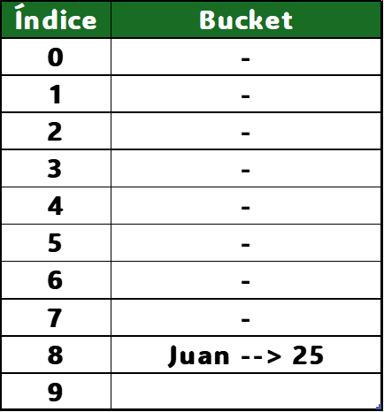
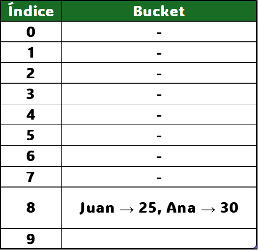

En Java, HashMap usa:
- Un array de "buckets": cada posición del array es un bucket que almacena un nodo clave-valor.
- Nodos (<K, V>): son pares clave-valor con punteros (-->) a posibles colisiones.
- Rehashing: cuando la tabla se llena demasiado (carga ≥ 75%), se duplica su tamaño y se vuelven a ubicar los elementos.

Cuando se inserta una clave:
- Se calcula su hash.
- Se almacena en el bucket correspondiente.
- Si hay colisión, se usa una lista enlazada.

Ventajas y desventajas de HashMap
✅ Búsqueda rápida.
❌ El consumo de memoria puede ser mayor que con otras estructuras.
❌ Riesgo de colisiones que pueden degradar el rendimiento si hay muchas.